Getting started with R
Cirad - UnB
2025-04-16
R and RStudio
Let’s open R
What is R?
R is a programming language for processing and analysing quantitative data. It is derived from the programming language S.
R is free and Open Source: it is can be used, modified and distributed freely.
R is collaborative: it is developed by its users.
R is multi-plateform: it works on Windows, Linux and Mac.
What does R do?
R allows to:
manipulate data
draw graphs
perform statistical analyses
and many other things…
Why use R?
It has many functionnalities that are constantly evolving, thanks to its community of users.
It is widely used by the scientific community.
A lot of help is available, in many languages.
Is it difficult?
Let’s open RStudio
=> RStudio opens R.
What is RStudio?
RStudio is an Integrated Development Environment (IDE): a software that provides many facilities to help programming with R.
The console and the prompt
The prompt is indicating that R is waiting for our instruction.
Let’s try some basic commands!
Write an operation in the console and click Enter.
[1] 5Let’s try some basic commands!
[1] 14Spaces are not important.
Command history
The previous commands are visible in the command history.
You can run them again by double-clicking on them or clicking on To Console. But in practice, we will not use this much…
You can also use the ⬆️ or ⬇️ keys of the keyboard to navigate the command history in the console.
Let’s try some more commands…
Warning in log(-1): NaNs produced[1] NaNNAN means “not a number”.
Let’s try some more commands…
This is an unfinished command. We can finish after the +.
Or press Esc to terminate the command line.
Let’s try some more commands…
We get an error message. Why?
R doesn’t know what is x.
Objects
Basic objects
Let’s put something in x
x is an object. We assign it the value of 5, using the assignment operator <-
⚠️ The content of x is not printed. But we can see it by typing its name in the console.
And we can use it in other commands.
Where are the objects stored?
Objects are store in the environment
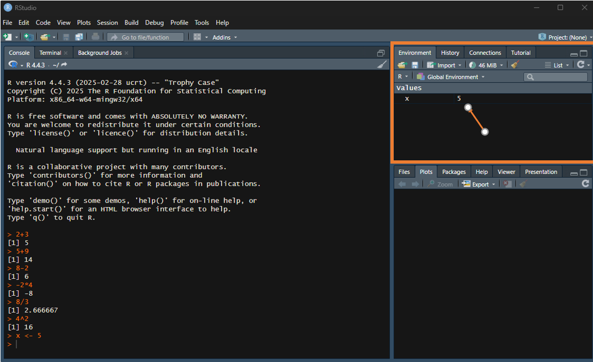⚠️ They are kept in memory throughout the session but are not saved when RStudio is closed.
Where are the objects stored?
You can see the content of the environment with the function ls
You can remove an object from the environment using the function rm
‚ö†Ô∏è Typing rm() or using the üßπsymbol in the environment windows clears all the environment!
Assigning a new value to an existing object
[1] 3Assigning a new value to an object replaces the previous value (as you can see in the environment). ⚠️ Don’t give the same name to several objects!
Objects are not linked
Modifying x does not modify y.
Creating more objects
The new object result is stored in the environment. It is not printed.
We can name objects the way we want but‚Ķü§î
… calling them result, result2, result3 is not explicit enought!
Naming an object
Some good practices when naming an object:
- Use explicit names while trying to keep names short
- Object names can contain letter, numbers, the symbols ., - and _
- Object names cannot start with a number
ü§î What does the error message mean?
Naming an object
Some good practices when naming an object:
- Object names cannot contain a space
ü§î What do the error messages mean?
- Avoid accents (for encoding problems)
Naming an object
Some good practices when naming an object:
- The case matters (upper and lower cases are not the same)
Naming an object
Adopt a consistent naming style
Objects are not necessarly numbers
What if we write some text in an object?
[1] "Ola!"ü§î Why do we need the ‚Äù ‚Äù ?
ü§î What does the error message mean?
Mode of an object
Object can have different types.
The type of an object is called the mode.
We can use the function mode to check what is the mode of an object:
Mode of an object
Here are the main modes you will use:
| Mode | What | Example |
|---|---|---|
| numeric | real number | 2.3 |
| character | character string | “hello” |
| logical | bolean (true/false) | true |
Mode of an object
ü§î What is a boolean?
Numeric
Object of mode numeric can be:
- double: for any real number
- integer
Numeric
What happens if we try to put a decimal number as a numeric?
We get a warning message. What does it mean?
Check the type of an object
[1] TRUEü§î Why?
Change the type of an object
We can change the type of an object.
Check and change the type of an object
See also
is.numeric and as.numeric
is.integer and as.integer
is.double and as.double
is.character and as.character
is.logical and as.logical
…
Let’s play a bit!
ü§î
All good?
You’ve done your first steps with R!
Parab√©ns üéâ
R scripts
Before going further with our exploration of R, let’s get organised!
ü§î Where are the object stored ? and the commands ?
What happens when we close and restart a R session?
We need need to save our work!
Script
What is a script?
A script is a text file in which can can write and organise all the commands of a workflow.
This is the core of our work.
Saving all the commands in a script is what makes our work reproductible.
Let’s create a new script
In RStudio, click on File > New file > R script

This opens a new pane in RStudio, this is the text editor where we can write the script.
Adding a command in a script and running it
Let’s write a command in the script.
To run it, select it and click on Run.
üí° You can also use the keyboard shortcut Ctrl + Enter.
You can select only one command or a group of commands.
Commenting a script
It is very important to document your script by commenting it. Remember?
Comment your code abundantly! Choose the language well.
Commenting a script
To comment a script use one or several #.
R will ignore everything that comes after, until the end of the line.
You can comment before or at the end of a line.
Organising a script
A script should include:
a header: title, date, author
a description of what the script does
an outline
several sections (blocks of code)
üí° Use blank lines and indents to organise your script
Blocks of code
Adding #### (4 or more) or several —-at the end of a line, create a block of code.
You can fold/unfold a block of code by clicking on the grey arrow.
And you can see an overview of the script by clicking on Outline.
Colours in a script
Colours in a R script help you distinguish comments, numeric values, character strings, functions…
üí° You can change the color theme in Tools > Global options > Appearance.
Save and open a script
When there are unsaved changes in a script, it appears in blue
To save a script, go to File > Save or File > Save As‚Ķ. üí° You can also use the shortcut Ctrl + S or click on üíæ.
To open an existing script, go File > Open file‚Ķ.üí° You can also use the short cut Ctrl + O or click on üìÇ.
R file
The script is saved as an .R file:
.R files are recognised as R script by RStudio, which allows using the syntax colour code, and running the code directly.
Questions on the last session?
Let’s see if all is clear
What is the difference between R and RStudio?
Write the command for the following operations:
4 multiplied by -2
\(5^2\)
6 divided by 3
Logarithm of 6
5 squared
Let’s see if all is clear
Create an object call dimension and assing it the value of 2.5
Calculate the area of a square with sides = dimension and store the result in area
What are the good practices when naming an object?
Create a object containing a character string
What are the three most used modes for basic objects?
Test if dimension is smaller than area and store the result in an object called test
Let’s see if all is clear
Create a object containing the value of 33 and transform it to a character string
Create an object containing an integer value
Check if the object area is a numeric
Check if the object area is an integer and store the result in another object
Create a new script and write its title
How to save a script?
Working with RStudio
Working directory
The working directory is where R works.
This is where R looks for when you want to open or save a file.
To know where is the working directory:
This gives the absolute path to the work directory
You can change the working directory using the function setwd() to organise your work in a same folder.
Problems with absolute path
If you move your folder, the path will no longer work.
If you give your script to someone else, they will have to manually change the path to use your script.
If you are messy…
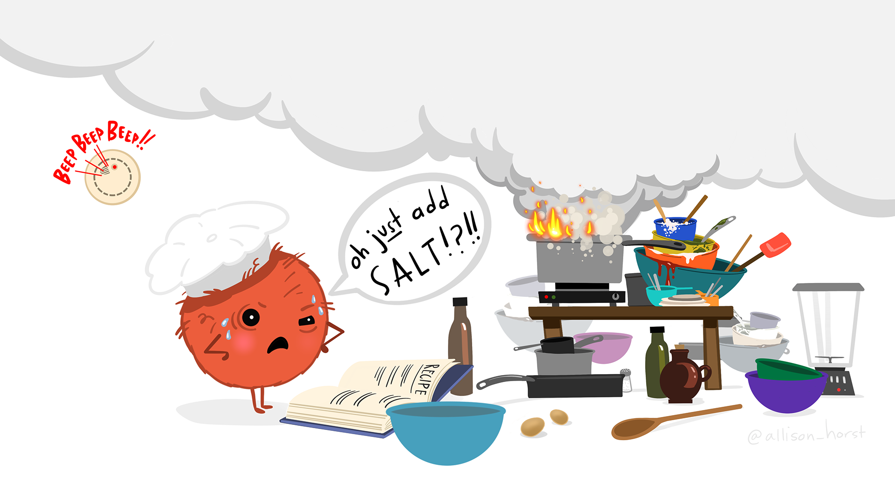
RStudio project
We will use RStudio projects to organise the workflow and gather all the files related to a same workflow in a same place.
A RStudio project is a folder on your computer where all the files of the project are grouped.
By default, the working directory of a project is the root of the RStudio project (the folder where you put the project). So no more problems with absolute path üòä!
To share a project, just share the full folder.
RStudio project
To create a new RStudio project, go to File > New project…
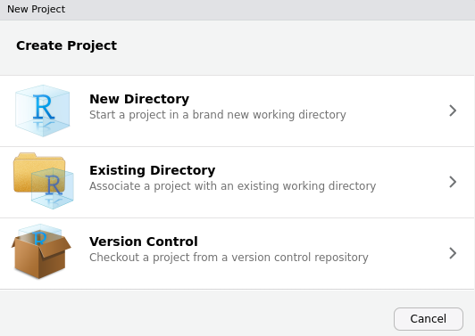You can either start a new directory or associate an existing one, if you already have one.
RStudio project
RStudio creates a .Rproj file that contains information about your project (you won’t need to open it).
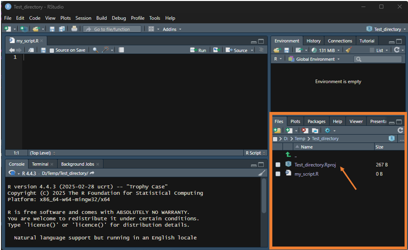RStudio project
You can see the name of the project, and switch from one project to another in the upper right corner.
You can see the path to the project folder at the top of the Console. This is the working directory (try getwd to check this).
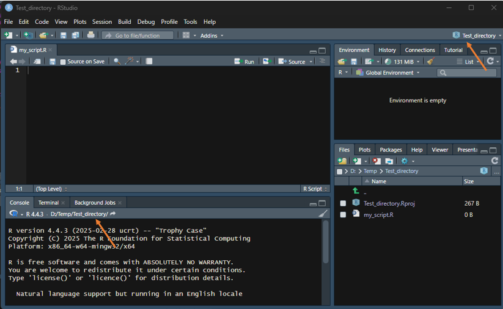RStudio project
When you create a new script, RStudio save it by default in the project folder.
You can view the content of the project folder in the file pane.
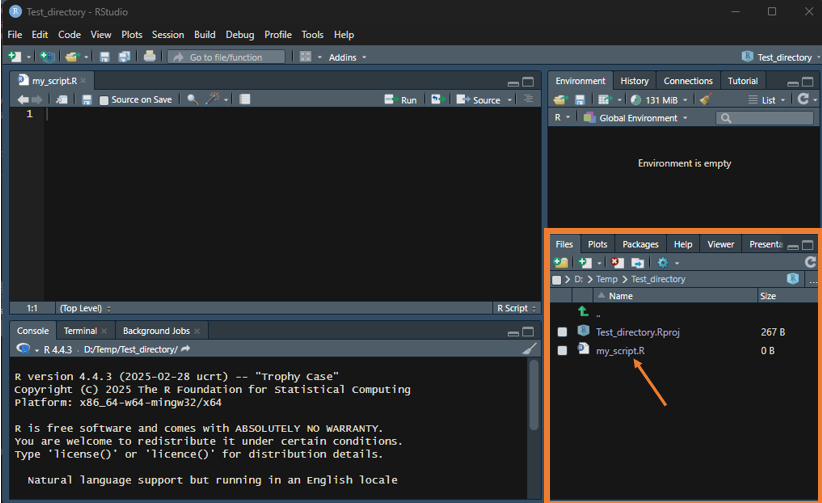RStudio project
From now on, we will always work with RStudio project.
Find a good balance between putting too many things into a same project, and having too many little projects.
Eg: Don’t have all the analyses of your PhD in a single project, but don’t split the steps of a given chapter into several projects.
A research objective = a chapter/paper = a RStudio project
Organising a RStudio project
To facilitate the work with others (including the future you):
Organise your projects in a clear and consistent way
Separate data, methods and outputs
Document your project in a README file
Organise a workflow into several scripts
Avoid very long script
=> Split the workflow into (relatively) short and logical steps and make a script for each
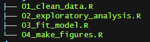üí° Give an explicit name to the scripts and start with a number so that they are ordered in logical way.
Executing a script from another one
We can run a full script by calling it from another script.
For instance, in a script called analyses.R, we can run a script called data_preparation.R by running the following command in the analyses.R script:
❗ We need to indicate the path into the working directory here. So if data_preparation.R is in the analyses folder, we need to write:
Example of project organisation
- .Rproj file at the root of the project folder
- data contains raw data and derived data in separate folders
- analyses: contains the script organised in a logical way
- R: contains the functions you have written
- outputs: contains figures, reports, etc…
- README: description of the project
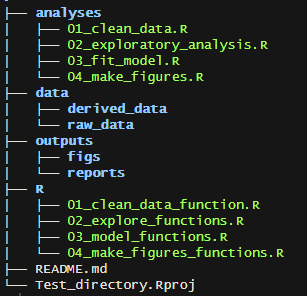
README file
Example of a basic README
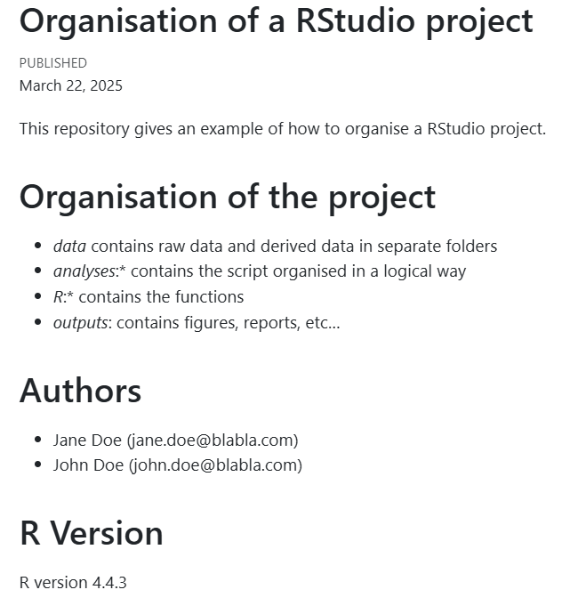❗ We will see what is a .md file later, for the moment, you can write the README file as a .txt
All good?
Do you understand the interest of working with RStudio now?
Some more objects
Objects we have seen so far
- numeric
- character
- logical
Let’s imagine that we have several logs (of wood) for which we know the volume. To calculate the mean volume of a log, we can do:
[1] 3ü§® This is clearly not very practical‚Ķ
Vectors
Instead, we use c() (that means combine) to create an object called a vector containing several values:
Or we can also write
NB: the values need to be separated by,
Vectors
A vector can contain several values of any mode…
[1] "logical"…but these values need to be of the same mode
ü§î What happened?
R converted all the values into character (the more flexible mode).
Vectors
We can check that vol is a vector:
[1] TRUETo see the length of a vector, we can use the function length:
Vectors
We can see the structure of vol, using the function str.
num tells us that the vector contains numerical values.
[1:4] gives the length of the vector.
The first values of the vector are displayed.
Vectors
NB: an object of length one is also a vector.
Vectors
We can access a value within a vector using []. This is called the indexation:
[1] 3.2This is the second value of the vector vol.
üí° the numbers within [] that we see when we print a vector indicates the position of the first element of a line. Let‚Äôs see an exemple with a long vector:
[1] 75.87 1079.63 1951.44 2653.65 276.42 1010.23 643.70 1534.75 1753.35
[10] 142.30 133.65 2634.70 1799.33 254.97 651.36 1324.60 253.82 1747.05
[19] 2559.30 2721.20 2839.26 300.84 2839.24 1965.00 636.06Named vectors
We can add names to the elements of a vector:
Tree1 Tree2 Tree3 Tree4
2.9 3.2 2.4 3.5 üí° The names are stored in an object that is also a vector:
We can then call an element of a vector by its name:
Operations on vectors
We can perform an operation on each value of a vector, simultaneously.
For instance, let’s convert the volume from m3 to cm3
Operations on vectors
Let’s come back to the mean volume:
[1] 3ü§î What did we do?
We used the function sum to calculate the sum and then divided it by 4
üí° We can also use the function mean
We have just learnt two new functions üòÑ !
Operations on vectors
We can also do operations between two vectors. ⚠️ The vectors need to have the same length
Let’s create a vector of wood density (WD) and calculate the weight of the logs:
Tree1 Tree2 Tree3 Tree4
2.204 2.080 1.392 2.835 ü§î What did we do? We multiplied each value of vol by the corresponding value of WD
Factors
If we want to create a vector for a categorical variable, we can use a class of vector called a factor.
ü§î What is a categorical variable? It‚Äôs a type of variable representing data divided in distinct group or categories.
Let’s take the example of the seasons:
Let’s transform it into a factor:
Factors
The values that a factor can take are called levels.
[1] dry dry wet dry wet wet
Levels: dry wetWhen printing a vector, the first line shows the values, the second line shows the levels.
Factors
We cannot add a value that is not in levels:
Warning in `[<-.factor`(`*tmp*`, 7, value = "winter"): invalid factor level, NA
generated[1] dry dry wet dry wet wet <NA>
Levels: dry wetüí° NA means Not available and represents missing or undefined values.
Factors
We can add levels:
[1] "dry" "wet" "winter" "spring" "summer" "fall" ü§î What did we do? We combined the existing levels and the new ones and replaced the vector of levels by this new vector.
Factors
The new levels are added, even though none of the observation takes these values:
[1] dry dry wet dry wet wet <NA>
Levels: dry wet winter spring summer fallWe can now add a value within these new levels:
Factors
We can easily count the number of values per levels using the function table
season
dry wet winter spring summer fall
3 3 1 0 0 0 NB: NAs are not shown.
To go further on object type
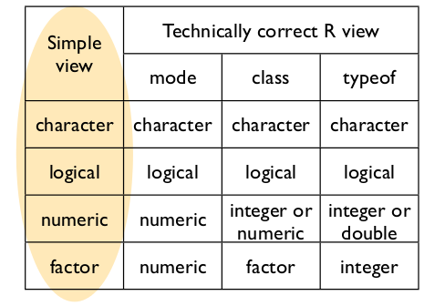Figure by Jenny Bryan
Questions on the last session?
Data structure
Data structure
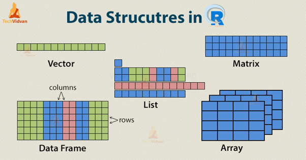Matrices
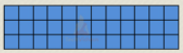A matrix is a two-dimensional data structure (rows and columns) where all the element are of the same mode.
Let’s create a matrix:
Matrices
We get the dimensions of the matrix with the function dim:
[1] 4 2The first number is the number of rows, and the second the number of columns.
We can see the structure of the matrix using str
Matrices
We can name the columns and row names of a matrix using colnames and rownames respectively.
col1 col2
row1 1.0 7.0
row2 4.0 8.3
row3 8.0 4.6
row4 6.5 6.0Matrices
To access a row, a column, or a value in a matrix, we use []
col1 col2
row1 1.0 7.0
row2 4.0 8.3
row3 8.0 4.6
row4 6.5 6.0Operations on matrices
We can get the sum of each row of a matrix using rowSums :
row1 row2 row3 row4
8.0 12.3 12.6 12.5 ⚠️ the function rowsum also exists, and doesn’t do the same thing.
We get the sum of each column using colSums:
Operations on matrices
We can do an operation on each element of a matrix:
col1 col2
row1 2 14.0
row2 8 16.6
row3 16 9.2
row4 13 12.0Operations on matrices
We can transposed a matrix using t
Operations on matrices
We can add/subtract/multiply/divide each element of two matrices of the same size, element by element:
col1 col2
row1 2 14.0
row2 8 16.6
row3 16 9.2
row4 13 12.0⚠️ This is not the same thing as matrix calculus (which we will not cover here).
Arrays
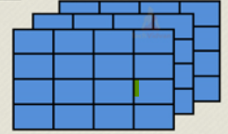An array is a multi-dimensional data structure where all the element are of the same mode.
It is an extension of a matrix with more than two dimensions.
.
Lists
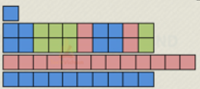A list is a flexible object containing elements of different structures (eg: a vector, a matrix,‚Ķ but a also a graph, a function‚Ķ).
.
Lists
Let’s create a list:
[[1]]
Tree1 Tree2 Tree3 Tree4
2.9 3.2 2.4 3.5
[[2]]
col1 col2
row1 1.0 7.0
row2 4.0 8.3
row3 8.0 4.6
row4 6.5 6.0
[[3]]
[1] dry dry wet dry wet wet <NA> winter
Levels: dry wet winter spring summer fallLists
We get the dimensions of the list with the function length:
[1] 3We can see the structure of the list using str:
List of 3
$ : Named num [1:4] 2.9 3.2 2.4 3.5
..- attr(*, "names")= chr [1:4] "Tree1" "Tree2" "Tree3" "Tree4"
$ : num [1:4, 1:2] 1 4 8 6.5 7 8.3 4.6 6
..- attr(*, "dimnames")=List of 2
.. ..$ : chr [1:4] "row1" "row2" "row3" "row4"
.. ..$ : chr [1:2] "col1" "col2"
$ : Factor w/ 6 levels "dry","wet","winter",..: 1 1 2 1 2 2 NA 3We see the structure of each element of the list.
Lists
To access an object within a list, we use [[]]:
[1] dry dry wet dry wet wet <NA> winter
Levels: dry wet winter spring summer fallWe can then access a value within this object:
Lists
The element of a list can be named using names:
NULLLists
The objects contained in a list can also be named when we create the list:
$Volume
Tree1 Tree2 Tree3 Tree4
2.9 3.2 2.4 3.5
$Matrix
col1 col2
row1 1.0 7.0
row2 4.0 8.3
row3 8.0 4.6
row4 6.5 6.0
$Season
[1] dry dry wet dry wet wet <NA> winter
Levels: dry wet winter spring summer fallLists
We can then access an object by its name, using $::
Tree1 Tree2 Tree3 Tree4
2.9 3.2 2.4 3.5 Dataframes
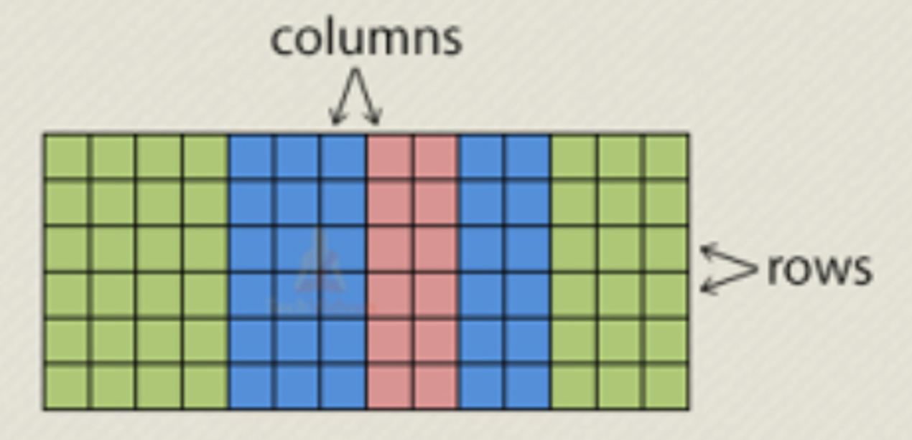A dataframe is a two-dimensional structure that allow storing data sets:
each column is a variable (can be of different type)
each row is an observation
This is the structure we will use the more, we’ll come back to it in the next session.
Operators
Arithmetic operators
We have already seen the 4 main operations in R:
and we also have seen that we can apply them on all elements of a vector or a matrix.
Arithmetic operators
The priority for operation in R are the same as in maths:
[1] 16Sequence operator
The operator : is used to create a sequence:
[1] 1 2 3 4 5 6 7 8 9 10⚠️ This operator has a high precedence (it takes priority), so use () wisely
Logical operators - comparison
Logical comparison operators are used to compare values. They return a logical value (TRUE/FALSE).
[1] TRUESuperior or equal / inferior or equal:
Logical operators - comparison
Logical comparison operators are used to compare values. They return a logical value (TRUE/FALSE).
We will use them a lot later when we will do conditional tests.
Equal == vs non-equal !=:
[1] FALSELogical operators - comparison
isTRUE / isFALSE
[1] FALSELogical operators - comparison
%in% tests if a value belongs to a vector.
[1] 2 3Logical operators - comparison
ü§î Let‚Äôs play a bit!
[1] TRUELogical operators - combination
Logical combination operators are used to combine two (or more) conditions:
We use & to test if both conditions are satisfied:
[1] TRUEWe use | to test if at least one condition is satisfied:
Functions
We have already used many functions.
Do you remember some of them?
What is a function?
A function is a command:
MyMean <-mean(v, na.rm=TRUE)
It has a name
It takes arguments that can be data on which to perform the command, or parameters or options of the function. Arguments are put within ( ) and separated with ,.
It returns a result
Argument with default values
Let’s go back to our mean:
[1] NA⚠️ Arguments can have default values, see the help of the function
Here na.rm (which allows to remove the NAs) takes the value of false by default
Getting help on a function
We can use help or ? to see the help of a function.
Getting help on a function
The help generally contains:
A title
Description
Usage: show the main arguments and their default values
Arguments: explain what are the arguments
Value: explain how the results is obtained
References
See Also: links to related functions
Examples
On the top of the help, the package is mention in { }
Some useful mathematical functions
sqrt: square root
exp and log: exponetial and logarithm
abs: absolute value
cos, sinus and tan: cosinus, sinus and tangent
mean, min, max, median, range
pi: the number \(\pi\)
Packages
What is a package?
A package is an extension of R, developed by a member of the community of R users.
A package gathers additional functions
Many packages are available on CRAN (Comprehensive R Archive Network)
There are packages for (almost ?) everything…
Installing a package
Go the tab Package and click on Install
Type the name of the package and click on Install
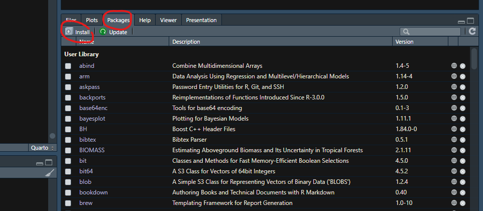üí° you can also use the function install.packages.
Loading a package
Once a package is installed, you will need to load it using library to be able to use it.
You need to install packages once, but load them in every new session.
Getting help on a package
When you click on the name of a package that is already installed, in the Packages tab, you can get access to:
User guides and vignettes (sort of tutorial)
The help of all the functions of the package
Getting help on a package
Many packages have a cheatsheet where you can easily see an overview of the main functions of a package.
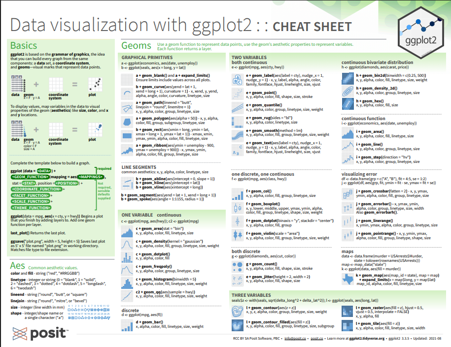Acknowledgments
This document largely uses the following:
Resources
Aulas R do basico eo avançado - Murilo S. Dias (Videos em Portuguese, até aula 19) Here
Base R cheatsheet in English
RStudio cheatsheet in English and in Portuguese
Ciência de Dados em R Damiani, A. Milz, B., Lente, C., Falbel, D., Correa, F. Trecenti, J., Luduvice, N., Lacerda, T., Amorim, W. (Livro em portuguese, até capitulo 4) Here
You don’t need to read/watch all!